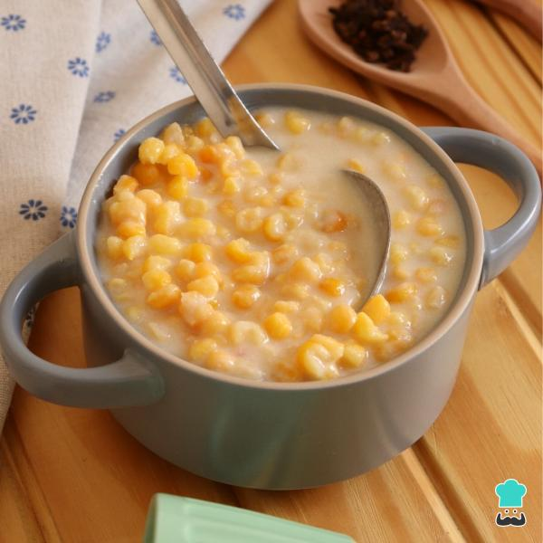

Plantações de milho

No Brasil, o plantio de milho ocorre em dois momentos: a
primeira safra, também conhecida como safra de verão, e a
segunda safra, a famosa safrinha.
O milho na economia

No Brasil, o milho tem um papel crucial na produção de etanol,
um dos principais biocombustíveis utilizados no país. Além disso, a indústria alimentícia
utiliza o milho em uma variedade de produtos, desde cereais matinais até snacks e bebidas.
O milho na culinária brasileira
È a matéria-prima principal de vários pratos da
culinária típica brasileira como canjica, cuscuz, polenta, angu, mingaus,
pamonhas, cremes, entre outros como bolos, pipoca ou simplesmente milho cozido.